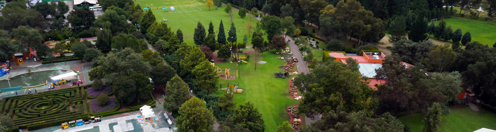

MARAVILLATE CON TEPOTZOTLÁN
Xochitla
Parque Ecológico incluyen bellos jardines rodeados de flores, un área especial para campamentos, restaurante y amplios espacios para andar en bicicleta y patinar.

xochitla.org.mx/
Museo Nacional del Virreinato
Este maravilloso lugar fue el Colegio de Novicios de la Compañía de Jesus y actualmente tiene a resguardo importantes obras y colecciones de pintura, orfebrería, arte plumario y escultura. Al interior del museo puedes visitar el Templo de San Francisco Javier, un lugar maravilloso que te dejará impresionado con sus retablos estilo barroco.

JUDITH AMADOR TELLO/proceso.com
Arcos del Sitio
Arcos del Sitio es un parque donde además de admirar el acueducto más alto de México, podrás disfrutar de tirolesas, paseos a caballo, albercas, gotcha y juegos infantiles. Puedes acampar y comer al interior del parque.

arcosdelsitiotepotzotlan.blogspot.mx